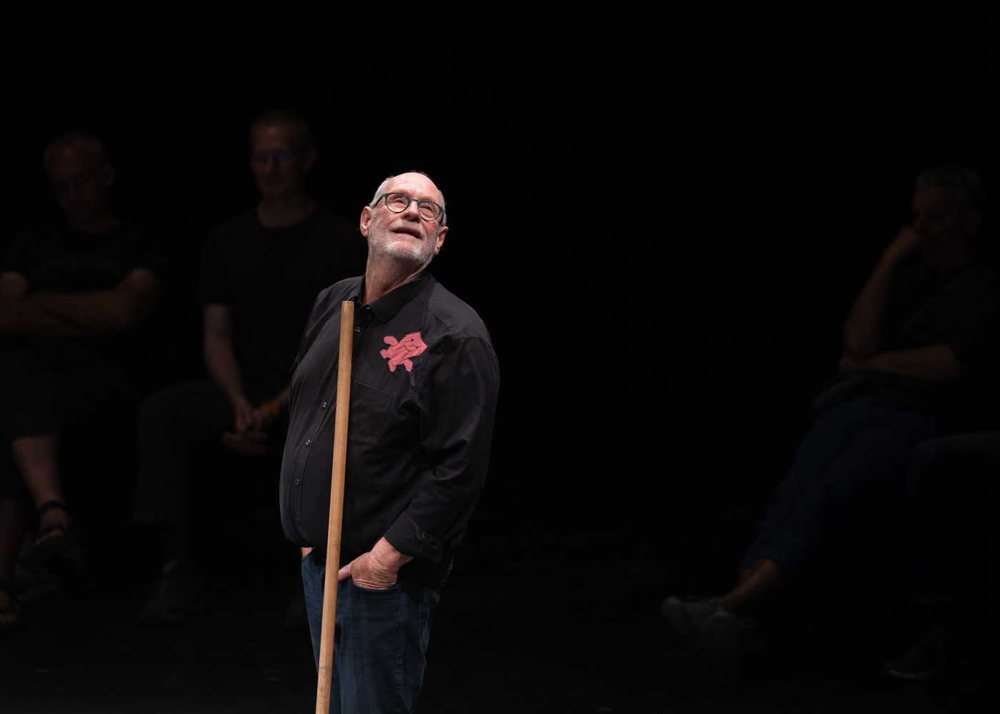

sandscapes
Circles. Time. An ironic introspective exchange with the public.
An empty black circle. A pendulum draws a fragile spiral of white sand. Movement creates patterns, patterns become images, images intertwine, layer beyond layer, regenerating through cycles of destruction and renewed motion. Echoes of the Circus ring where danger and vulnerability are real. Nowhere to hide. Nothing lacking.

Ueli Hirzel
A few decades ago, Ueli Hirzel was a circus acrobat, a tightrope walker. Then he went behind the scenes and created an open space for emerging artists in his Château de Monthelon in France. With Hirzels support, numerous successful and groundbreaking productions were created outside the mainstream circus scene. Today, Ueli Hirzel no longer performs acrobatic feats when he arrives on stage. He uses a few brooms to reveal a kind of essence of circus, or even a reflection of life itself.
„He provokes a dialogue with the public based on radical wisdom born from a lifetime of experience. The truth is that Hirzel appears as anything but old, especially when he argues with himself and the audience.“
— Ursula Huber
press
„It's not a mandala — but it's still beautiful“ : The Cirqu' ‐ Festival takes you back to the origins of the circus.
The circus has Aarau in its grip. World‐class artists perform in the streets, squares and halls. Ueli Hirzel is a quiet surprise among them.
The pendulum paints one circle inside the other. The sand trickles out of a small, black bag onto the floor; it takes its time. Viewed from above, one „O“ nestles into the next, constant and persistent, like the collective „Om“ before the yoga class.
„Sandscapes“ is the name of the piece by circus maker Ueli Hirzel that officially opens this year's Cirqu'‐Festival. There have already been circus teasers in the town by Johann Le Guillerm, who is performing several productions in this edition. Festival director Roman Müller: „At Cirqu' we see big action, but the beginning is small.“ This is not an evaluation, rather that the opening piece leads back to the origins of the circus: to the circle — to the ring. Müller could not have chosen the opening piece more precisely.

With the lawn mower through the Zen garden
Ueli Hirzel has now painted an incredible carousel with his pendulum in the middle of the Old Riding Hall. He strokes the sand, leaving traces almost like in a Buddhist Zen Garden No artistic stunts, no breakneck acrobatics. Through his calmness and concentration Hirzel shows the audience the presence so essential to every Circus performance.
The patterns Hirzel sketches in the sand with a mop and scrubbing brush become ever wilder. Swirls become lines that wind into sprawling squiggles. „It's not a mandala, but it's still beautiful,“ Hirzel comments. Where will it lead? „We'll see, this is a premiere after all,“ he muses further. Chance is painting itself. Soon he is wielding two brooms simultaneously — one on the left, one on the right — as if he were plowing through the Zen Garden with a lawn mower.
„Everything is real in the ring.“
Ueli Hirzel has been standing in rings since the 1980s, letting visions of circus dance across ropes and stumbling over them as a poetic clown. He draws the circle for the ring with the confidence of a knife thrower aiming his blade just past his wife's carotid artery for the 500th time. His original goal was to be on the theatre stage, but he found his way to the circus because: „Nothing is « as if », but everything is real.“
It is simply beautiful to watch Hirzel going round and around and to follow his circles of thought. He quotes famous philosophers such as Marcel Proust ( „In Search of Lost Time“ ) and Mick Jagger ( „Time Is On My Side“ ) and weaves thoughts from a 45‐year theatre career in between. Yes, it may be a small, quiet prelude to the Circus Festival, but it allows you to see deep into the circus soul.
requirements
— Solo Performance, 50 minutes.
— Playing surface: circle 8 meters in diameter, smooth dark finish ( eg. dance floor ).
— Playing area: At least 5 meters of room height. Preference for circular or bi‐frontal audience. As most of the performance takes place on the floor, it is advantageous for visibility if the audience is slightly elevated. Any additional rows of seats must be higher than the one in front.
— Hanging point: Between 4.50 and 5.50 meters high, anchored for a pendulum of 10kg.
— Light: Circle 8 meters. To be defined according to the venue.
— No sound.
— Number of spectators: Depending on the venue.
— Set up four hours ( without lights ).
— Arrival one day before first show.